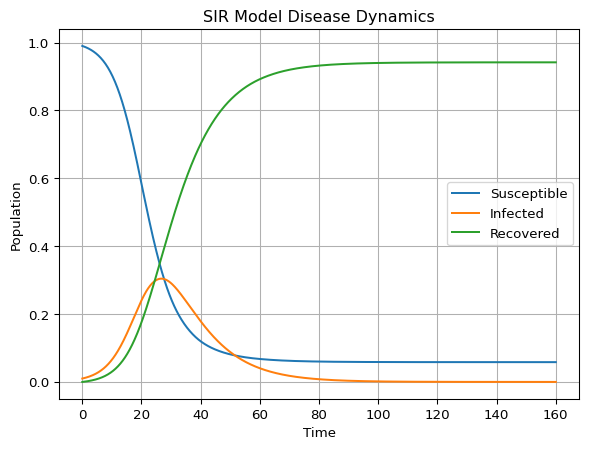

1D Ordinary Differential Equations
SIR Epidemic Model
Introduction
The SIR model is a classical compartmental model in epidemiology. It splits the population into:
- \(S(t)\): susceptible
- \(I(t)\): infected
- \(R(t)\): recovered
and describes how individuals move between these compartments over time.
Learning objectives
- Implement and solve a system of ODEs with
scipy.integrate.solve_ivp. - Visualize \(S(t)\), \(I(t)\), and \(R(t)\).
- Interpret how the parameters \((\beta, \gamma)\) change the epidemic curve.
The SIR Model
We will use the normalized SIR model (fractions of the population, so \(S+I+R=1\)):
\[ \begin{aligned} \dot S &= -\beta SI,\\ \dot I &= \beta SI - \gamma I,\\ \dot R &= \gamma I. \end{aligned} \]
- \(\beta\) controls infection/transmission.
- \(\gamma\) controls recovery.
Reference Implementation
A working implementation is provided in:
sessions/s01_odes_1d/sir_model.py
The model function is sir_model(t, y, beta, gamma) and the plotting helper is plot_sir_model(...).
Render-time Figure
The figure below is generated at render-time from the reference script.
Exploration
- Increase \(\beta\) while keeping \(\gamma\) fixed. What happens to the peak of \(I(t)\)?
- Increase \(\gamma\) while keeping \(\beta\) fixed. Does the epidemic end sooner?
- Try different initial infected fractions \(I(0)\). Do you always see an outbreak?
Run Locally
To run the standalone script and show the plot:
python sessions/s01_odes_1d/sir_model.py